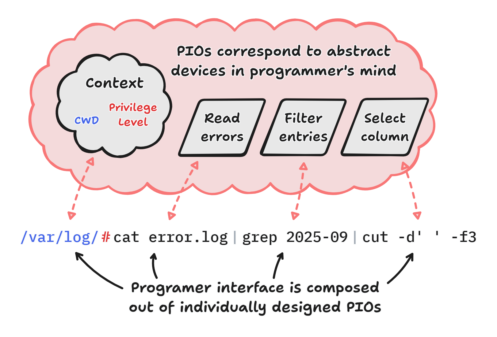
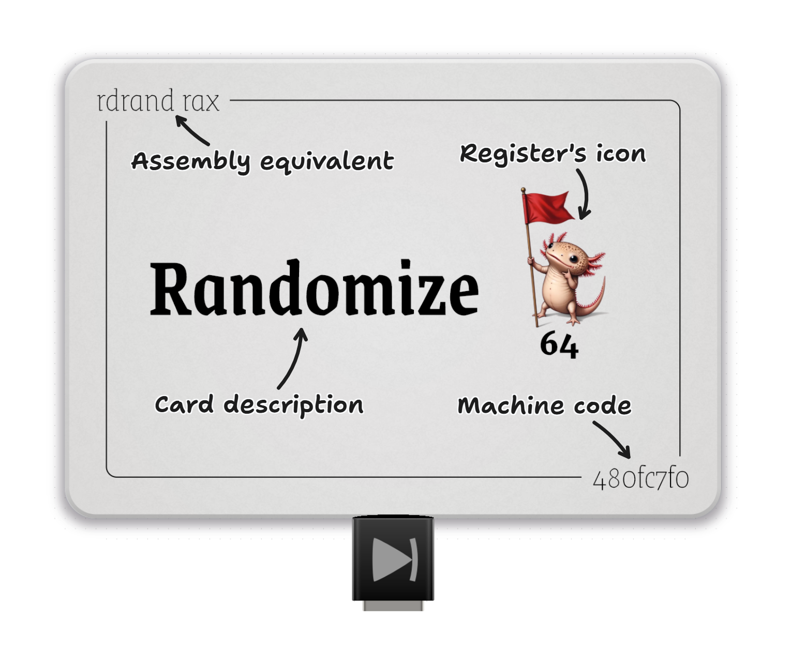

Automat: Objects As Syntax Not Data
Abstract
Automat is a skeuomorphic desktop automation tool (similar in function to AutoHotKey) with the end-goal of evolving into a fast & intuitive general purpose computing environment. This article aims to give an overview of Automat, focusing on it's distinguishing approach to object-oriented programming:
| OOP Objects | Automat's Objects | |
|---|---|---|
| Role | Encapsulate data & behavior | Programmer interface |
| Lifetime | Dynamic throughout execution | Static throughout execution |
| User interface | Formal specification | Direct manipulation |
| Implementation | Abstracted as much as possible | Exposed as much as possible |
Automat's objects (called Programmer Interface Objects) should be applicable to other programming environments and should become a valuable tool for programming language researchers and software engineers.
Introduction to Automat
Computers have a potential to greatly improve people's lives. By automating repeatable work. By providing access to the humanity's combined knowledge & culture. By amplifying human creativity with innovative digital tools.
Yet existing software ecosystem largely fails to realize this potential. Forces that surround software engineering seem to eventually separate users & programmers, locking out a large portion of the population from commanding computers. One source of these forces lies in poor, inconsistent or obsolete decisions made when the foundational technologies have been designed. Another source, maybe the more important out of the two, lies in social barriers that limit the access to knowledge, often in subtle and hard to see ways.
Luckily we're seeing continued progress on both fronts. Growth of internet, smartphones and large language models in the last few decades inspire great optimism in more egalitarian access to technology in the future.
This work aims to further this goal by reducing the formalism required to control computers. It introduces an environment called Automat - an interface offering a skeuomorphic representation of objects in computer memory.
Metaphorical interface allows a wider audience of users to compose complex behaviors. People who see themselves as "non-technical" are not alienated by formal appearance. People who are not familiar with computer terminology can guess the function and composition rules of on-screen elements. It invites playful experimentation.
Initial goal of Automat is set on the problem of game automation. Playing games is a necessary component of human psychology that adds depth to social life and helps in skill development. Unfortunately many modern games, particularly the ones developed with return on investment in mind, adopt a range of techniques that produce addiction and incentivise recurring payments. Mechanisms such as virtual hoarding, lotteries & player conditioning are a common element of many games.
The opportunity that Automat sees in this environment is that game automation can be used as a mechanism for the human mind to escape the addictive gameplay loops while at the same time adding more depth to the automated game.
From the perspective of Automat's development, the variety of games creates a smooth complexity gradient - which makes it usable very early in its development as a macro playback utility with incremental additions expanding its use to more use-cases. Eventually, the same techniques that can be used for game automation may potentially be used to solve real-world problems, transitioning Automat into a general purpose computing environment.
Learning from programming languages which are in broad use today, Automat's development is not being done with expectation of profit. Monetization efforts tend to compromise the design of computing environments by introducing competing objectives. As a result commercial programming systems have had a history of difficulties in attracting user trust. Instead, Automat's development is driven by a small community following hacker culture & hacker ethics. The goal of this article is to encourage readers to join this community and push the frontier of visual programming together.
The easiest way to join is to reach out through real-time chat at automat.org/gang. It's perfectly fine to join just to follow project updates. If you'd like to help in any way just introduce yourself, mention your skills or interests. Automat could benefit from nearly all kinds of help - from players who can test-drive it, to foley artists who can give it more life.
Just like many tools in the physical world are designed with two "ends" in mind - one meant for being comfortable in human hand - and one efficient at doing the work. Automat's design has three "ends".
- One meant for interfacing with the person using the system,
- one meant for interfacing with other tools and
- one meant for effectively interfacing with the computing hardware.
This article focuses on the first of the three.
Objects As Syntax Not Data
Object abstraction is a double-edged sword. On one hand it brings regularity and compartmentalization of complexity but it also comes with non-trivial performance drawbacks - more pronounced the higher the number of objects in a system. This poses a challenge when representing basic concepts such as numbers, strings or characters in object-oriented fashion. Presence of objects increases complexity of optimization and/or execution of a program. Objects have to be created & destroyed as the program executes which adds extra work for the CPU. Because this extra work involves object lifetimes it's also sync-heavy, preventing CPU cores from executing in parallel and instead having to continuously coordinate with one another.
The handling of objects is doubly important for visual computing environments as it's often connected to their main limiting factor - visual complexity. A problem summarized in a statement called the Deutsch limit:
"The problem with visual programming is that you can't have more than 50 visual primitives on the screen at the same time."
Many practical OO programming systems (for example Java) limit the number of managed objects using primitive types - a layer in their abstraction hierarchy below which objects are substituted by machine-level data types, like an integer or a boolean. The machine-level types lack the OO machinery that enables garbage collection or dynamic dispatch but they're also simple enough to be optimized into efficient machine code. The idea here is to make the system as object-oriented as possible, and only switch to primitive types for the simplest and most basic operations. Even then the primitive types can still be "boxed" (using Java terminology) into objects if the programmer decides OO features to be beneficial.
Another branch of OO programming systems (for example C++) gravitates towards machine-friendly defaults and only enables OO features when they're explicitly requested by the programmer. In such systems, objects are rare and deliberate. Some OO features, like generics, may be completely optimized out at compile time leading to no runtime overhead.
Non-performance-critical programming systems may completely encapsulate machine code within objects and simply accept the lower performance. This is often justified by the objectives of such systems and has little practical consequence. Exponential improvements in hardware performance and specialized optimization techniques made such systems practical for many use-cases. Great examples of such systems might be the JavaScript and Python interpreters.
A common theme in all of those text-based OO programming systems is that the purpose of objects is to steer the execution of the program in some particular way. Objects are not used directly by programmers - they are defined by programmers while program is written and used for data processing while the program executes. The goal of an object in such a system is to perform this encapsulation of data & behavior in an efficient manner, rather than to be manipulated by a human. Definition of objects and their relations is done through the syntax of the language instead.
| Syntax | High level | Low level | |
|---|---|---|---|
| Java | No | Yes | Maybe |
| C++ | No | Maybe | Maybe |
| Python | No | Yes | Yes |
This is an important observation for any visual programming system since objects in a visual programming system have entirely different goals. Their purpose is to provide the capabilities that are typically achieved with textual syntax. This may include: defining data layout, control flow, logic, dependencies & relations. We'll call the objects that provide those capabilities Programmer Interface Objects (PIO) and an interface designed around those objects - an Object-Oriented Programmer Interface (OOPI).
In contrast to the three approaches presented earlier (examples of Java, C++, JavaScript & Python), OOPI uses objects primarily to define program structure. Although it's strongly object-oriented from the programmer's perspective, at runtime objects may be completely elliminated, alleviating their overheads.
| Syntax | High level | Low level | |
|---|---|---|---|
| OOPI | Yes | Maybe | Maybe |
Definition
Let's start with by defining the category of PIO more precisely. A programmer during work with source code of a program, develops a mental model of the program's structure. This mental model is composed of interacting abstract objects. This usage of "abstract objects" has nothing to do with classic OO terminology. Instead it refers to mental devices that programmers use to build a mental model of a program. Similar abstract objects may exist in the mind of a person examining a mathematical problem or a chess player planning a strategy. In programming these abstract objects typically map to subtrees of AST, or IR subgraphs, or they may exist within the code implicitly as invariants, or imagined results of code execution. We can attempt to translate objects from this abstract mental domain back into a concrete computing environment, where each abstract object is materialized as concrete and composable object on the screen of a computer. The objects produced by this translation are PIOs.
The “Programmer Interface Objects” has been chosen as it's an analogue to “User Interface Objects” that captures their intended use by a programmer. “Syntax Objects” might be another good term that some programmers might prefer.
Another way to define PIOs is that they are the primary tools that the programmer composes to define the expected behavior of the computer.
- Just like variables and unlike traditional OO objects, PIOs are not data themselves. Instead they form an interface to data.
- Just like functions with their call sites and a definition, PI objects are mental primitives (atoms) from the perspective of the programmer solving one specific problem but within the system their behavior may be arbitrarily complex and open for change.
Finally, PIO can also be defined as a component of an Object Oriented User Interface (OOUI) intended for programming.
Out of the three definitions above, the first one is the most important one since it connects the visible interface elements to mental devices that programmers use when designing programs. This mapping is the key to proper design of PIOs and is missed by behavioral theories of programming. By providing an interface that resembles and supports those mental contructs, both experienced and novice programmers can work faster and more intuitively.
For example Programming as
Theory Building by Peter Naur negates the existance of those mental devices: theory held by a
person has no inherent
division into parts and no inherent ordering
. Instead it defines theory as the ability to answer
questions and make changes to the program.
Examples
Every high level programming language includes some form of object composition. While the composition interface is often limited by textual representation, the objects are designed to be composed by a programmer and great attention is paid to their ease of use.
Therefore PIOs can be found in every high level programming system. Functions, class definitions, rules in rule-based systems, macros, statements & expressions - they all correspond to fuzzy mental constructs that programmers use to mentally represent & manipulate programs.
Properties
Since the size of the source code for any problem is constant, regardless of the size of the processed data, then a word-for-word translation of any textual program into a visual programming system should produce a constant number of PIOs. The observation that the number of PIOs is constant goes against the practice of representing data processed by programs as objects. PIOs are typically not automatically constructed & destroyed during program execution.
One exception to this property are programs that employ macro expansion or rule-based substitutions during evaluation - for those programs the number of PIOs may vary during execution.
Similarly to program source code, PIOs may either perform their work through interpretation or be translated into a more efficient form through compilation. PIOs can hold or refer to data (just like variables), but they're not data themselves - they're an interface to data, used by programmers and therefore should be optimized towards being comfortably used by programmers.
Design Criteria
Instead of encapsulating data, the role of PIOs is to describe the behavior of the program in a readable way. The appearance of objects should help programmer understand their behavior and help in object composition. They are the area within programming where careful design is most needed.
A brief introduction to the role of design can be found in Beauty Is Objective by Andrew Coyle. Although written with website design in mind, this introduction is very applicable to OOPI environments. In fact it is recommended to interrupt this lecture now to read that article.
We can outline some objectives for a well designed PIO:
Faithful. Elementary operations offered by a PIO should correspond to the transforms that programmers perform when thinking about a program.
Discoverable. When a programmer needs a specific PIO but is not aware of its existence, it should be easy to find it.
Memorable. A programmer who used specific PIO in the past should have an easy time recalling it when needed.
Skimmable. Programmers (including programmers without formal education) should be able to intuitively guess the function of a PIO in the first seconds of seeing it for the first time.
Easy to master. Fully understanding the behavior of a PIO should require as little effert as possible.
Fast to use. Time needed to perform a task using a given PIO should be minimized.
Many other design objectives could be listed here but only the ones directly related to the programmer have been deemed relevant now. Nota bene the difference in design criteria for PIOs & traditional OO objects (for example SOLID princiles).
Follow-up articles will discuss the interoperability & efficiency aspects.
Exercise: It's valuable to go back to the bash example above. Please take a a look at that example now and try to answer the following questions:
- How would you rate the Bash programmer interface in each of the design criteria listed in this section?
- Try to imagine an alternative interface that would aim to maximize each out of those design criteria. Focus on just one criterion at a time. How could this interface look like?
- Try to describe the imagined interface to an AI image generator of your choice.
Following the first two points should make it clear to the reader how PIOs differ from objects used at program runtime and that they need to be designed with a different mindset. Automat's distinctive appearance is a consequence of starting its design process with all three points above.
Objects In Automat
Automat uses careful PIO design to enable its users to perform tasks typically reserved to professional programmers.
Machine Code Scripting
An example of this approach is a scripting mechanism used by Automat. Automat's scripts use a metaphor of playing cards with instructions written on them, similar to many collectible card games. Each card corresponds roughly to one machine instruction and can be composed with other cards to form a program. CPU registers are presented visually as checkerboards governed by an icon. Iconic representation helps avoid jargon and makes the representation more welcoming. The instruction cards don't fully hide their low-level nature - they still show the assembly mnemonic & machine code in the corners of the card - but they do so in a way that passes as visual ornament rather than the main interface.
While this representation can be used by non-technical users, it also produces scripts that execute with the performance of hand-crafted assembly.
Thanks to closeness of mapping, this representation also enables hot code reloading where the user may freely change the code while it's executing.
Programming By Demonstration
The basic function of Automat is recording & replaying input macros. A simple macro can be created by creating a chain of simple commands & delays:
While it's fairly easy for simple cases, this approach fails for more complex sequences of keystrokes. Programming them manually would be prohibitively slow. To help with that, Automat offers several helpers:
- a Macro Recorder object that records keystrokes,
- a Hotkey object that triggers execution of other objects when a hotkey is pressed and
- a Timeline object that can drive execution of other objects according to its tracks.
Together they can be used to create an ad-hoc programming-by-demonstration environment:
Together with other objects present in Automat this enables users to mix different programming techniques - procedural programming, reactive programming, programming by demonstration.
Summary
We have defined Programmer Interface Objects - a category of objects that are used by programmers to construct programs. As opposed to classical OO objects which encapsulate data & behavor during program runtime, PIOs form the human-computer interface of a programming environment. Because of different roles, PIOs should be separated from runtime data structures and designed with different objectives in mind. An example of the Automat environment demonstrates that carefully designed PIOs can enable non-programmers to perform tasks typically reserved to expert programmers - such as manipulating low-level machine code and mixing different programming styles.